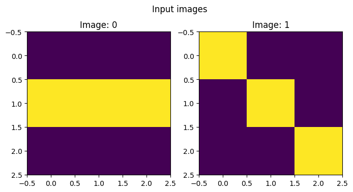
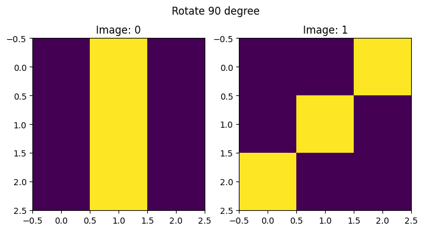

import spellops
from fastcore.foundation import Lspellops
Harness the power of speLL with spellops to write clean and readable pipelines.
Developer Guide
Instead of writing this:
L(f_c(L(...).map(f_a).filter(f_b))).map(f_d)[0]With spellops’s pipe operator, you can visually maintain the order of execution (f_a → filter(f_b) → f_c → f_d) by writing this:
L(...).map(f_a).filter(f_b).pipe(f_c).map(f_d)[0]And with tee operator, you can inspect and document your pipeline like this:
(L(...) .tee('input data')
.map(f_a) .tee('apply f_a to individual elements')
.filter(f_b) .tee('filter by f_b')
.pipe(f_c) .tee('apply f_c to the whole list')
.map(f_d)[0] .tee('finally apply f_d to the resulting elements and returning first value')
)And once you’re done, you can keep all of this in your production code:
def process(data,verbose=False):
s = dict(show=verbose)
return (L(data) .tee('input data', **s)
.map(f_a) .tee('apply f_a to individual elements', **s)
.filter(f_b) .tee('filter by f_b', **s)
.pipe(f_c) .tee('apply f_c to the whole list', **s)
.map(f_d) .tee('finally apply f_d to the resulting elements and returning first value', **s)
.unwrap() # Extract the element out of the list
)Here are some examples:
Import L and spellops
NOTE: order of import does not matters.
Fluent string manipulaiton
L(['a', 'b', 'c']).map(str.upper).pipe('->'.join, wrap=False)'A->B->C'Or using convenience mehtod pipen that stands for pipe with wrap=False (no wrap):
L(['a', 'b', 'c']).map(str.upper).pipen('->'.join)'A->B->C'Count how many elements are present in both sublists
(L([[1,2,3,2],[2,4,1]]) .tee('input')
.map(set) .tee('to set')
.starpipe(set.intersection) .tee('common elements')
.pipe(len) .tee('count elements')
.unwrap()
)input
[[1, 2, 3, 2], [2, 4, 1]]
to set
[{1, 2, 3}, {1, 2, 4}]
common elements
[1, 2]
count elements
[2]2An alternative approach can be to pipe with wrap=False:
NOTE: In this case, you can’t use tee after the final pipe operator because it no longer returns an L instance.
(L([[1,2,3,2],[2,4,1]]) .tee('input')
.map(set) .tee('to set')
.starpipe(set.intersection) .tee('common elements')
.pipe(len, wrap=False) # count elements
)input
[[1, 2, 3, 2], [2, 4, 1]]
to set
[{1, 2, 3}, {1, 2, 4}]
common elements
[1, 2]2Solve an AoC task
SPOILER ALERT: the following is a speLL to solve AoC 2024 part B.
GOAL: For each number in the left list, we need to count how many times it appears in the right list, multiply these together, and sum all results. This creates a “similarity score”, counting occurrences and multiplying, that measures how frequently numbers from the left list appear in the right list.
sample = '''3 4
4 3
2 5
1 3
3 9
3 3
'''
# This function will be "mapped" to individual elements
def to_int_tuple(a,b): return (int(a),int(b))
# this function acts on the whole list
def count_instances(As,Bs): return [(o,len([t for t in Bs if t==o])) for o in As]
from math import prod
(L(sample.splitlines())
.map(str.split) .tee('input data')
.starmap(to_int_tuple) .tee('int to tuples')
.zip(cycled=True) .tee('tuple of lists')
.starpipe(count_instances) .tee('apply count_instances to the "whole list"')
.map(prod) .tee('multiply tuple elements')
.sum()
)input data
[['3', '4'], ['4', '3'], ['2', '5'], ['1', '3'], ['3', '9'], ['3', '3']]
int to tuples
[(3, 4), (4, 3), (2, 5), (1, 3), (3, 9), (3, 3)]
tuple of lists
[(3, 4, 2, 1, 3, 3), (4, 3, 5, 3, 9, 3)]
apply count_instances to the "whole list"
[(3, 3), (4, 1), (2, 0), (1, 0), (3, 3), (3, 3)]
multiply tuple elements
[9, 4, 0, 0, 9, 9]31Visually inspect images transformations:
import matplotlib.pyplot as plt
import numpy as np
def plot_images(x:L, msg):
N = len(x)
plt.figure(figsize=(4*N,4))
for i,o in enumerate(x):
plt.subplot(1,N,i+1)
plt.imshow(o)
plt.title(f'Image: {i}')
plt.suptitle(msg)
(L([[[0,0,0],[1,1,1],[0,0,0]],[[1,0,0],[0,1,0],[0,0,1]]]) .tee('Input images',f=plot_images)
.map(lambda x: np.rot90(x,k=1)) .tee('Rotate 90 degree',f=plot_images)
)(#2) [array([[0, 1, 0],
[0, 1, 0],
[0, 1, 0]]),array([[0, 0, 1],
[0, 1, 0],
[1, 0, 0]])]

Install spellops in Development mode
# make sure spellops package is installed in development mode
$ pip install -e .
# make changes under nbs/ directory
# ...
# compile to have changes apply to spellops
$ nbdev_prepareUsage
Installation
Install latest from the GitHub repository:
$ pip install git+https://github.com/artste/spellops.gitor from pypi
$ pip install spellops